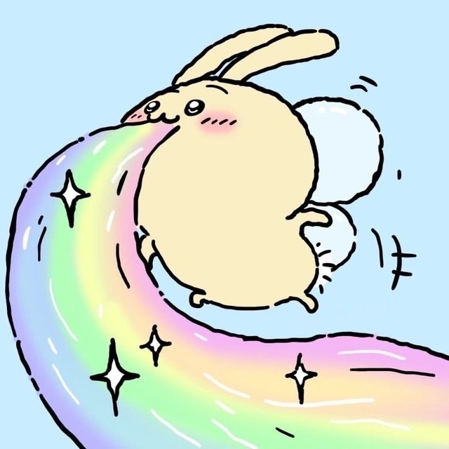
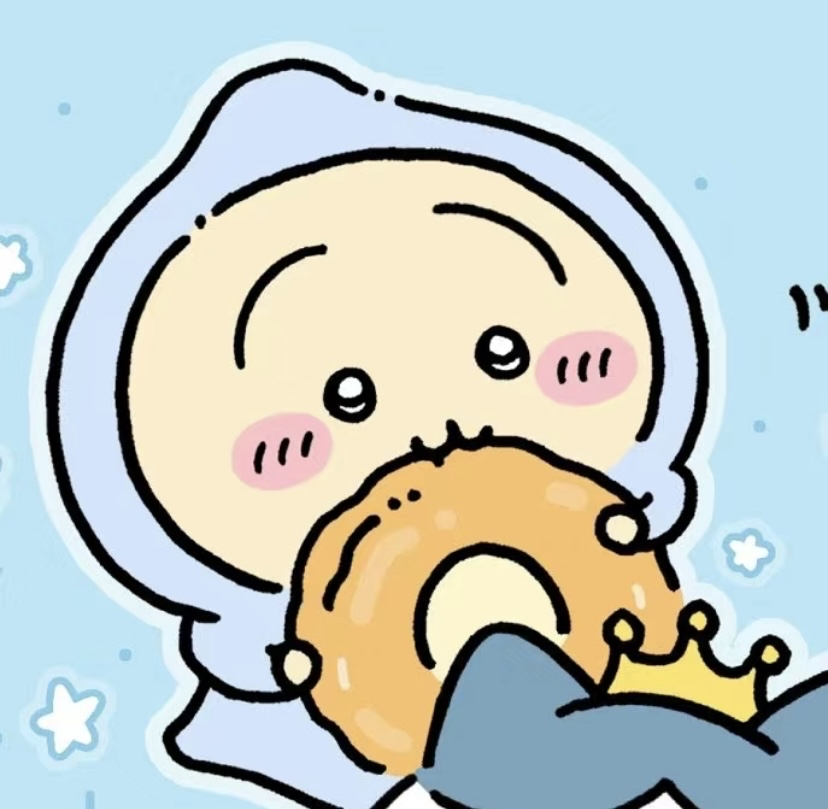
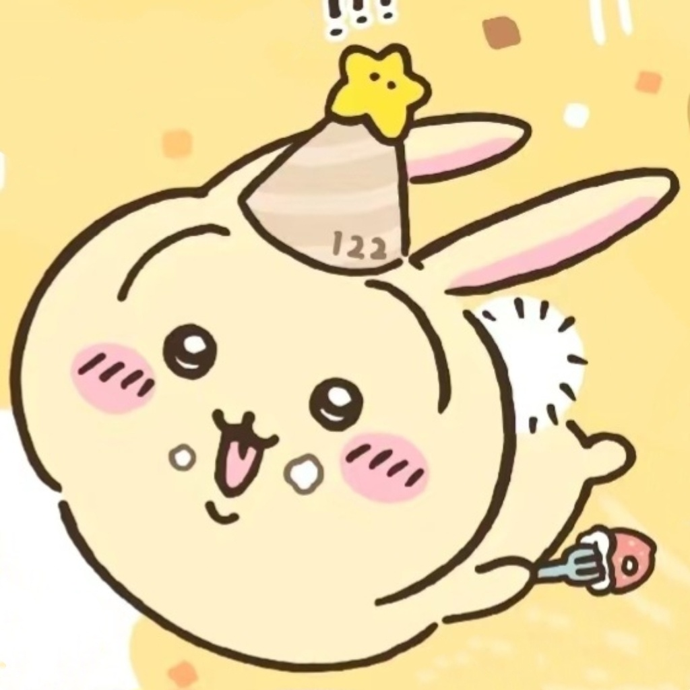
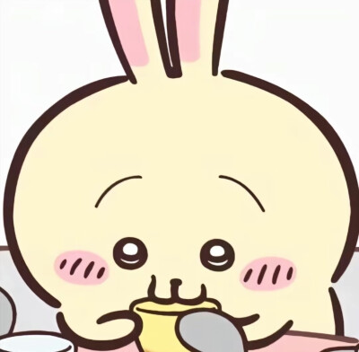
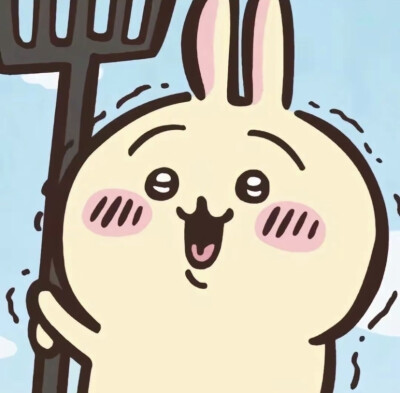
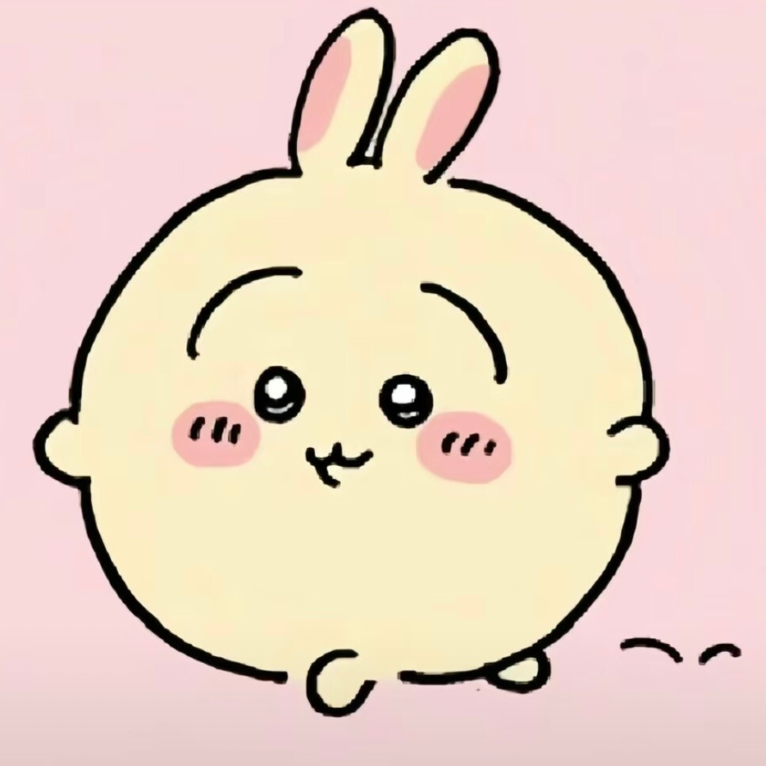
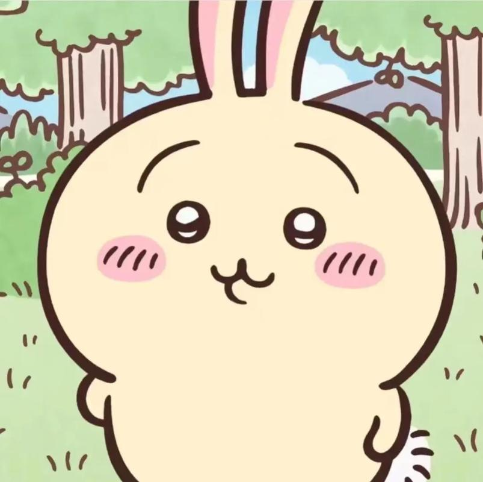
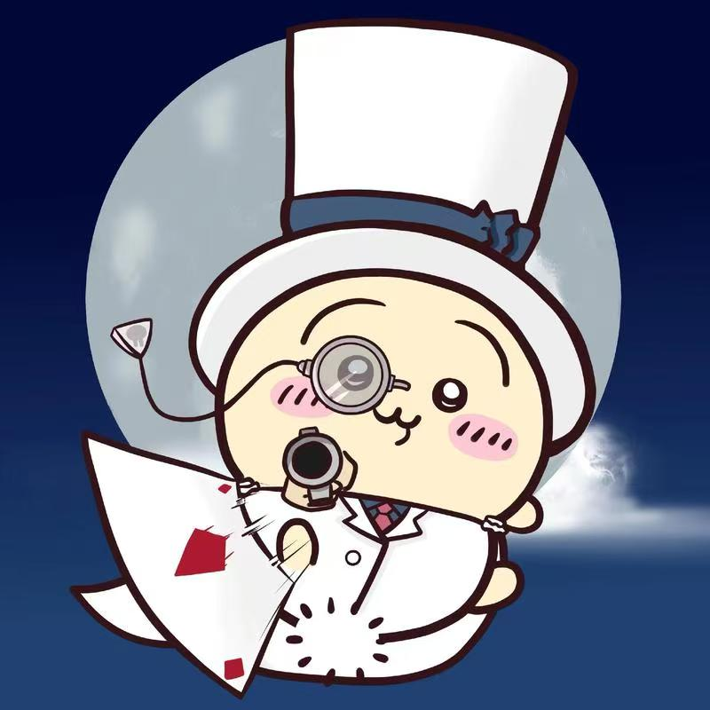
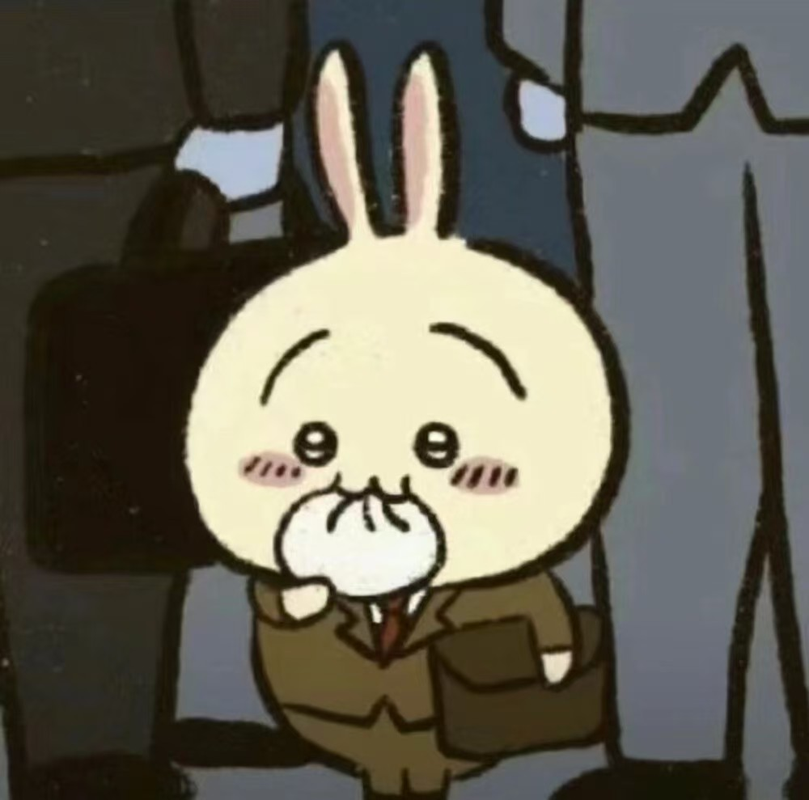
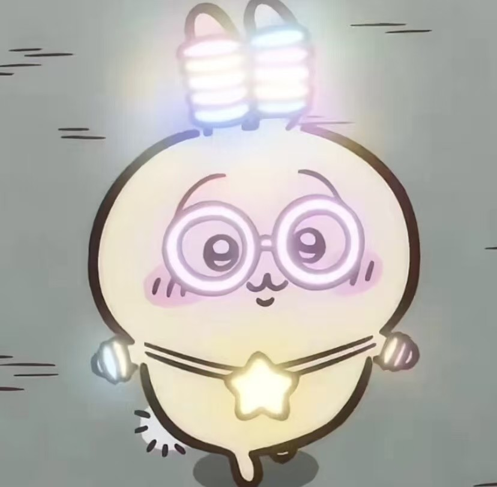

乌萨奇
-
形象特征：
乌萨奇是一只通体黄色的兔子，尾巴是一个白色大绒球，黑瞳，形象呆萌可爱。
-
性格特点：
性格乖张，活泼好动，自由奔放又神秘，直觉敏锐，是个十足的小吃货。
他情绪稳定，乐观勇敢，从不内耗，面对困难总是能保持积极的态度。
-
角色能力：
乌萨奇战斗力很强，在三人组中战斗能力最强，其武器是一根两端能发射火药的棍子。
他还拥有三级除草证，在采集玩法中表现出色，同时擅长弹吉他、料理、捕鱼等，是一个多才多艺的角色。
-
经典台词：
乌萨奇的台词常为“呀哈”“呜啦”等怪声，这些标志性的台词让人印象深刻。
-
角色关系：
乌萨奇是吉伊的第一个朋友，与吉伊、哈奇是好朋友，他们一起生活、工作，共同经历了许多事情。







